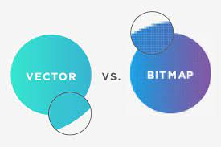

Vector afbeeldeningen is een afbeelding dat wiskundige formules gebruikt om simpele vormen er van te maken om daar weer van een complexe afbeelding van te maken. Vector afbeeldingen gebruiken ook niet absolute grote maar vehoudingen. Omdat het met formules is opgeslagen kan je het naar meer en minder aantal pixels veranderen zonder enkel probleem en zonder meer of minder data nodig te hebben. Letter cijfers en andere tekens zijn ook vaak vector afbeelding. Waardoor als je inzoomed op een letter dan wordt het niet pixelig. Bestanden met vector afbeeldingen gebruiken .SVG .IA of .EPS
Bitmap/rasterafbeelding defineert elke pixel. Bitmaps gebruiken dus geen wiskundige formules om te zeggen welke kleur een pixel is. Deze manier van afbeeldingen opslaan zorgt dat als je ver genoeg inzoomed, dan wordt de afbeelding pixelig en of wazig. Je gebruikt bij bitmap's .JPEG .PNG .GIG of .BMP.
